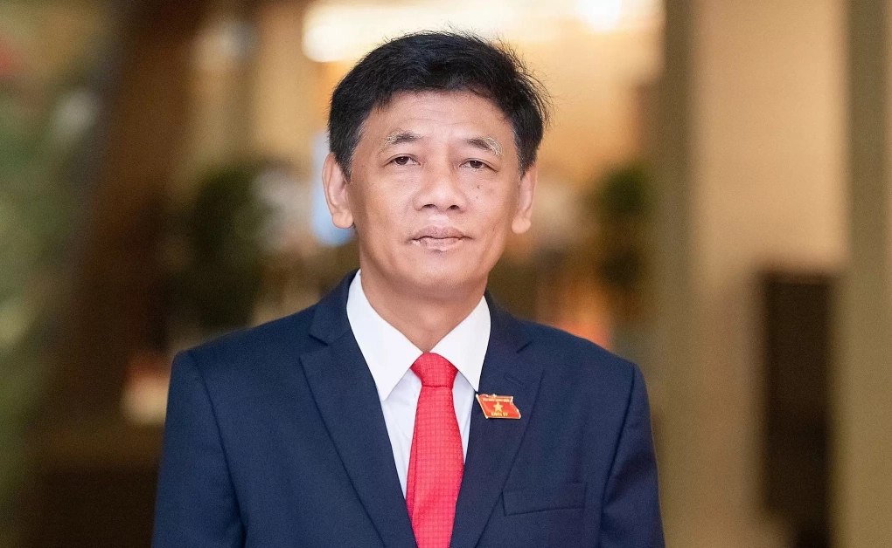
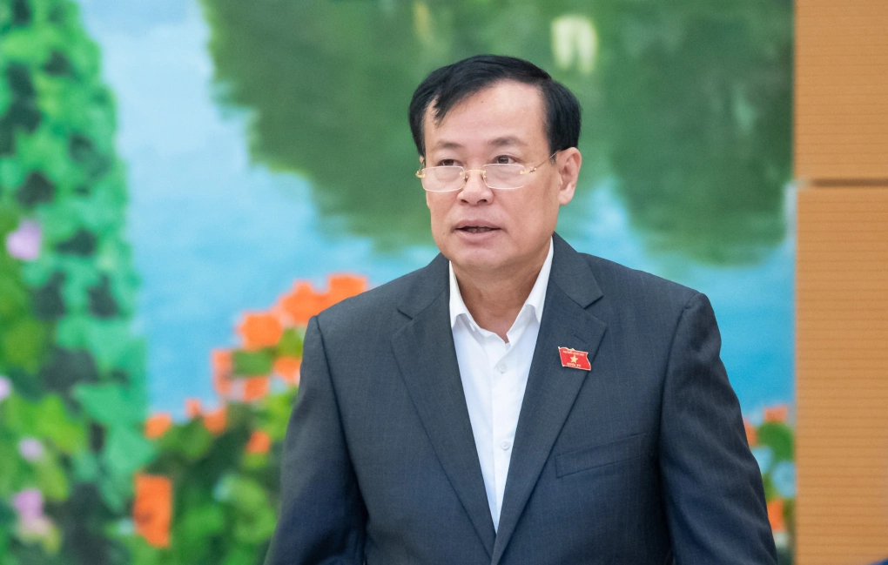
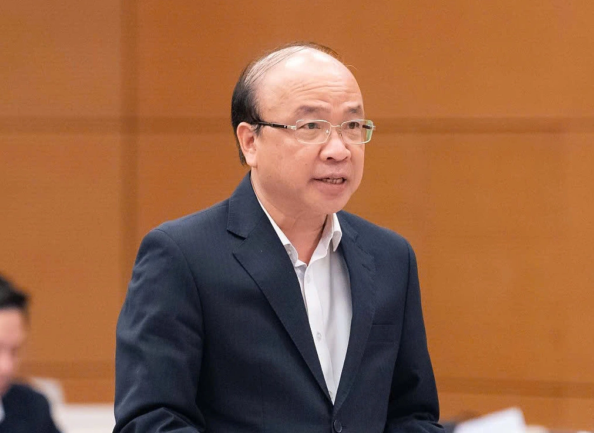
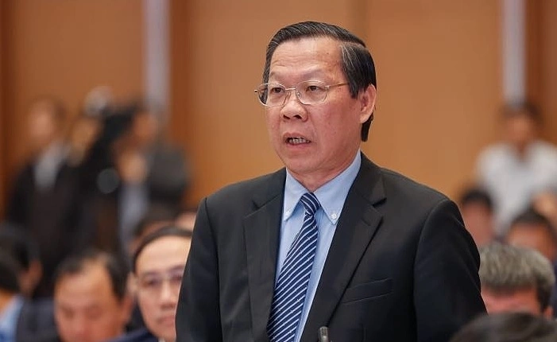
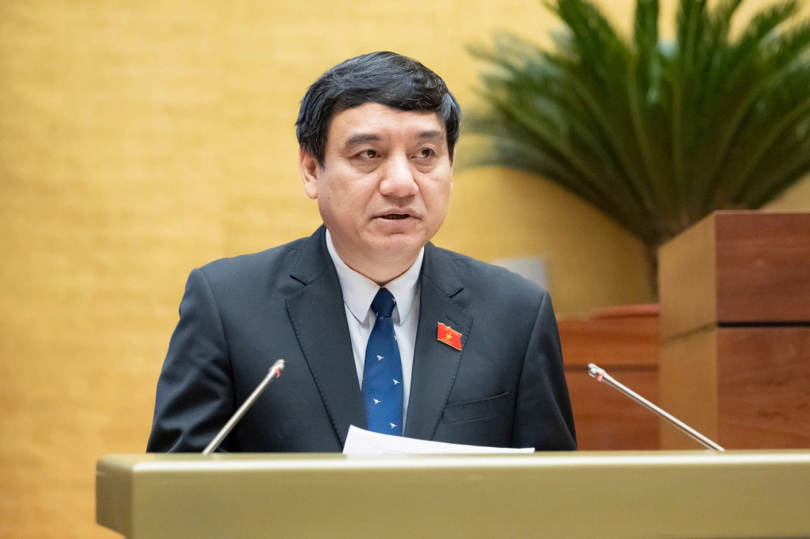
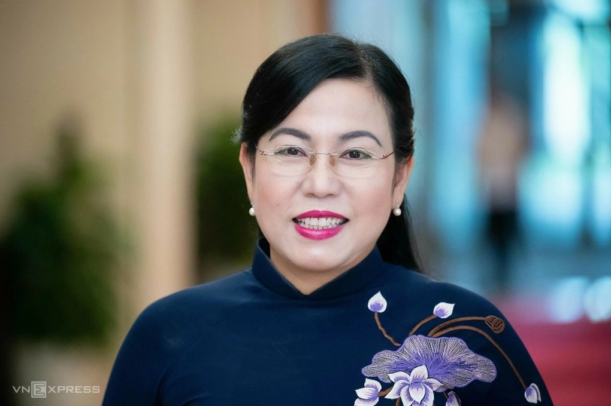
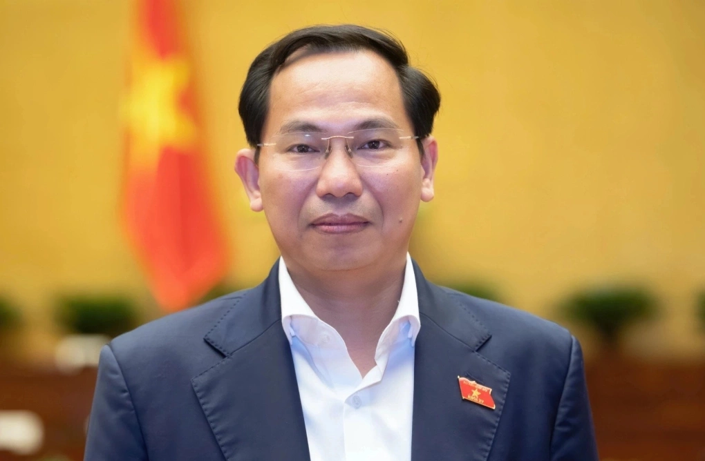
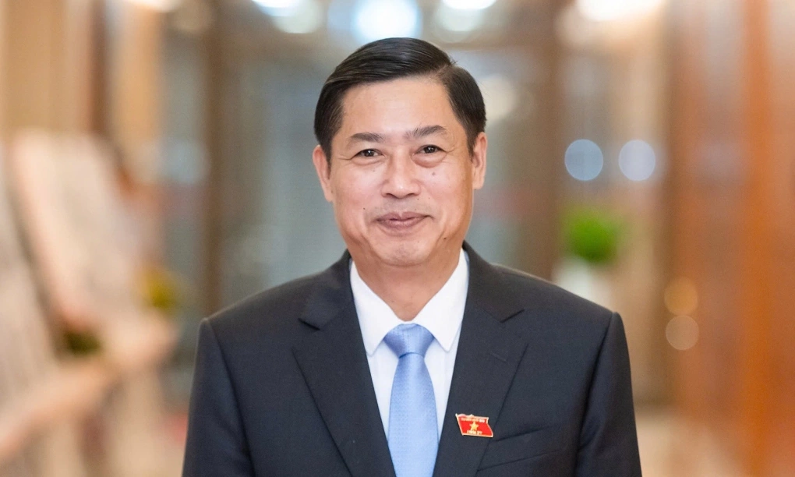
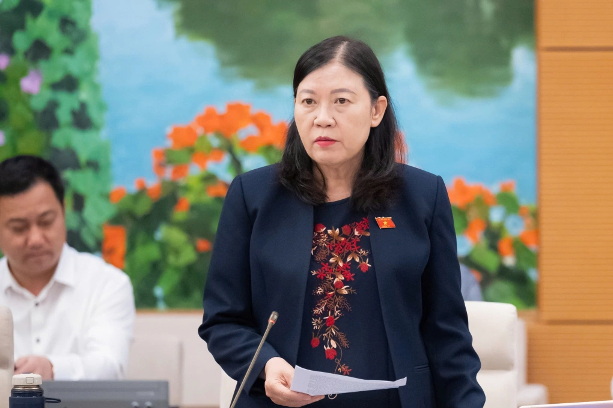

Mỹ – Iran đạt thỏa thuận về ngừng bắn, mở cửa eo biển Hormuz trong hai tuần
Mỹ và Iran đồng ý ngừng bắn trong hai tuần, Tehran sẽ cho phép tàu thuyền đi qua eo biển Hormuz trong thời gian này "với sự điều phối từ lực lượng vũ trăng".
Chiều 6/4, Quốc hội thông qua nghị quyết kiện toàn Ủy viên Ủy ban Thường vụ Quốc hội, đồng thời bầu 9 lãnh đạo các ủy ban và Hội đồng Dân tộc, nhiệm kỳ 2026-2031. Theo nghị quyết, Quốc hội đã bầu Chủ tịch Hội đồng Dân tộc và Chủ nhiệm các ủy ban: Quốc phòng, An ninh và Đối ngoại; Pháp luật và Tư pháp; Kinh tế và Tài chính; Văn hóa và Xã hội; Khoa học, Công nghệ và Môi trường; Công tác đại biểu; Ủy ban Dân nguyện và Giám sát và Tổng thư ký, Chủ nhiệm Văn phòng Quốc hội.

Chủ tịch Hội đồng Dân tộc Lâm Văn Mẫn 56 tuổi, quê Cần Thơ, người dân tộc Khmer. Ông là tiến sĩ Kinh tế, cử nhân Luật, Ủy viên dự khuyết hai khóa 11, 12, Ủy viên Trung ương hai khóa 13, 14; đại biểu Quốc hội khóa 15, 16. Ông từng làm Phó chủ tịch UBND tỉnh Sóc Trăng, Chủ tịch HĐND tỉnh Sóc Trăng, Bí thư Tỉnh ủy Sóc Trăng (cũ). Ông được Quốc hội bầu làm Chủ tịch Hội đồng dân tộc khóa 15 hồi giữa năm 2025.

Chủ nhiệm Ủy ban Quốc phòng, An ninh và Đối ngoại Lê Tấn Tới 57 tuổi, Tiến sĩ Luật; Đại học Cảnh sát nhân dân, quê Cà Mau. Ông là Ủy viên Trung ương Đảng hai khóa 13, 14; Thượng tướng, Thứ trưởng Công an (biệt phái), đại biểu Quốc hội 3 khóa 14-16. Ông từng giữ nhiều cương vị trong ngành công an như Giám đốc Công an tỉnh Bạc Liêu; Cục trưởng Cục Tổ chức cán bộ Bộ Công an; Thứ trưởng Công an. Tháng 7/2021, ông làm Chủ nhiệm Ủy ban Quốc phòng và An ninh của Quốc hội. Sau sắp xếp đơn vị, ông tiếp tục làm Chủ nhiệm Ủy ban Quốc phòng, An ninh và Đối ngoại.

Chủ nhiệm Ủy ban Pháp luật và Tư pháp Phan Chí Hiếu 57 tuổi, Tiến sĩ Luật học, quê Ninh Bình, Ủy viên Trung ương Đảng Khóa 14, Đại biểu Quốc hội Khóa 16. Ông từng kinh qua nhiều vị trí tại Bộ Tư pháp như Phó chánh Văn phòng Bộ; Giám đốc Học viện Tư pháp. Sau đó, ông đảm nhận cương vị Hiệu trưởng trường Đại học Luật Hà Nội; Phó chủ tịch Hội Luật gia Việt Nam nhiệm kỳ 2014-2019. Ông làm Thứ trưởng Tư pháp từ năm 2014, sau đó là Chủ tịch Viện Hàn lâm Khoa học xã hội Việt Nam. Ông quay lại Bộ Tư pháp với vai trò Thứ trưởng từ tháng 9/2025.

Chủ nhiệm Ủy ban Kinh tế và Tài chính Phan Văn Mãi 53 tuổi, quê Vĩnh Long. Ông là Ủy viên Trung ương Đảng 3 khóa 12-14; đại biểu Quốc hội hai khóa 15, 16. Ông từng giữ các cương vị Phó bí thư, Bí thư Tỉnh Đoàn Bến Tre; Phó bí thư Thường trực Tỉnh ủy Bến Tre rồi Bí thư Tỉnh ủy Bến Tre. Tháng 6/2021, ông Mãi được điều động, chỉ định giữ chức Phó bí thư Thường trực Thành ủy TP HCM. Hai tháng sau, ông được bầu giữ chức Chủ tịch UBND TP HCM. Ông giữ cương vị Chủ nhiệm Ủy ban Kinh tế và Tài chính từ tháng 2/2025.

Chủ nhiệm Ủy ban Văn hóa và Xã hội Nguyễn Đắc Vinh 54 tuổi, quê Nghệ An. Ông là Ủy viên Trung ương dự khuyết khóa 11, Ủy viên Trung ương 3 khóa 12-14; Đại biểu Quốc hội 4 khóa 13-16. Ông có thời gian dài công tác tại Trung ương Đoàn Thanh niên Cộng sản Hồ Chí Minh, trải qua các vị trí Bí thư thứ nhất Ban Chấp hành Trung ương Đoàn; Chủ tịch Hội Sinh viên Việt Nam. Tháng 4/2016, ông làm Bí thư Tỉnh ủy Nghệ An, tháng 12/2019 là Phó chánh Văn phòng Trung ương Đảng. Ông giữ cương vị Chủ nhiệm Ủy ban Văn hóa, Giáo dục, Thanh niên, Thiếu niên và Nhi đồng (cũ) từ tháng 4/2021. Tháng 2/2025, sau khi Quốc hội sáp nhập Ủy ban Văn hóa, Giáo dục và Ủy ban Xã hội thành Ủy ban Văn hóa và Xã hội, ông tiếp tục giữ chức Chủ nhiệm.

Chủ nhiệm Ủy ban Khoa học Công nghệ và Môi trường Nguyễn Thanh Hải 56 tuổi, quê Hà Nội; Phó giáo sư, Tiến sĩ Vật lý; Ủy viên Trung ương Đảng 3 khóa 12-14; Đại biểu Quốc hội 4 khóa 13-16. Tháng 12/2015, bà giữ cương vị Chủ nhiệm Ủy ban Văn hóa, Giáo dục, Thanh niên, Thiếu niên và Nhi đồng của Quốc hội. Sau đó nửa năm, bà làm Trưởng ban Dân nguyện thuộc Ủy ban Thường vụ Quốc hội và giữ cương vị này đến khi được chỉ định giữ chức Bí thư Tỉnh ủy Thái Nguyên vào tháng 5/2020. Tháng 6/2024, bà làm Trưởng ban Công tác đại biểu. Tháng 10/2025, bà được chỉ định tham gia Ban Chấp hành, Ban Thường vụ và giữ chức Bí thư Đảng ủy Ủy ban Khoa học, Công nghệ và Môi trường nhiệm kỳ 2025-2030.

Tổng Thư ký - Chủ nhiệm Văn phòng Quốc hội Lê Quang Mạnh 52 tuổi, quê Hà Nội, tiến sĩ kinh tế, Ủy viên Trung ương Đảng 2 khóa 13, 14; đại biểu Quốc hội 2 khóa 15, 16. Thời kỳ ở Bộ Kế hoạch và Đầu tư (cũ), ông từng giữ các vị trí Vụ trưởng Kinh tế đối ngoại; Vụ trưởng Kinh tế địa phương và lãnh thổ, Thứ trưởng Kế hoạch và Đầu tư. Sau đó, ông làm Phó bí thư Thành ủy, Chủ tịch UBND thành phố Cần Thơ. Tháng 9/2020, ông giữ chức Bí thư Thành ủy Cần Thơ. Từ tháng 5/2023, ông làm Chủ nhiệm Ủy ban Tài chính - Ngân sách. Khi Quốc hội sắp xếp lại tổ chức, ông đảm nhiệm cương vị Phó chủ nhiệm Thường trực Ủy ban Kinh tế và Tài chính. Tại Kỳ họp thứ 10, Quốc hội khóa 15, ông được Quốc hội bầu giữ chức Tổng Thư ký Quốc hội, Chủ nhiệm Văn phòng Quốc hội.

Chủ nhiệm Ủy ban Công tác đại biểu Nguyễn Hữu Đông 54 tuổi, quê ở Phú Thọ, Ủy viên dự khuyết khóa 12; Ủy viên Trung ương 2 khóa 13, 14; đại biểu Quốc hội 2 khóa 15, 16. Ông từng làm Trưởng ban Nội chính Tỉnh ủy Phú Thọ; Phó bí thư Tỉnh ủy Phú Thọ, sau đó được điều động làm Phó bí thư Tỉnh ủy Sơn La. Từ tháng 9/2020, ông giữ cương vị Bí thư Tỉnh ủy Sơn La. Tháng 6/2024, ông được Bộ Chính trị điều động, giữ chức Phó ban Nội chính Trung ương. Tháng 9/2025, Thường vụ Quốc hội quyết nghị phê chuẩn ông giữ chức Phó chủ nhiệm Thường trực Ủy ban Công tác đại biểu và giữ cương vị Chủ nhiệm từ tháng 10/2025.

Chủ nhiệm Ủy ban Dân nguyện và Giám sát Lê Thị Nga 62 tuổi, Thạc sĩ Luật, quê Hà Tĩnh. Bà là Ủy viên Trung ương Đảng 3 khóa 12-14; Đại biểu Quốc hội 7 khóa 10-16. Bà từng làm Thẩm phán, Phó chánh án Tòa án nhân dân thành phố Thanh Hóa (cũ); Phó Vụ trưởng Vụ Pháp luật, Văn phòng Chủ tịch nước. Năm 2007, bà làm Phó chủ nhiệm Ủy ban Tư pháp và sau đó giữ chức Chủ nhiệm Ủy ban Tư pháp. Sau sắp xếp bộ máy của Quốc hội vào tháng 2/2025, bà giữ cương vị Phó chủ nhiệm Thường trực Ủy ban Dân nguyện và Giám sát của Quốc hội. Có 2 người đứng đầu các Ủy ban của khóa 15 không tái cử là ông Hoàng Thanh Tùng, Chủ nhiệm Ủy ban Pháp luật và Tư pháp và ông Dương Thanh Bình, Chủ nhiệm Ủy ban Dân nguyện và Giám sát.

Mỹ và Iran đồng ý ngừng bắn trong hai tuần, Tehran sẽ cho phép tàu thuyền đi qua eo biển Hormuz trong thời gian này "với sự điều phối từ lực lượng vũ trăng".

Người dân Iran tập trung trên đường phố Tehran, vậy có và hô khẩu hiệu sau khi lệnh ngừng bắn hai tuần với Mỹ được công bố.

Nằm ở bộ nam eo biển Hormuz, cách Iran gần 34 km, bán đảo Musandam của Oman đang chứng kiến những hệ lụy về kinh tế và đời sống khi xung đột bùng phát.